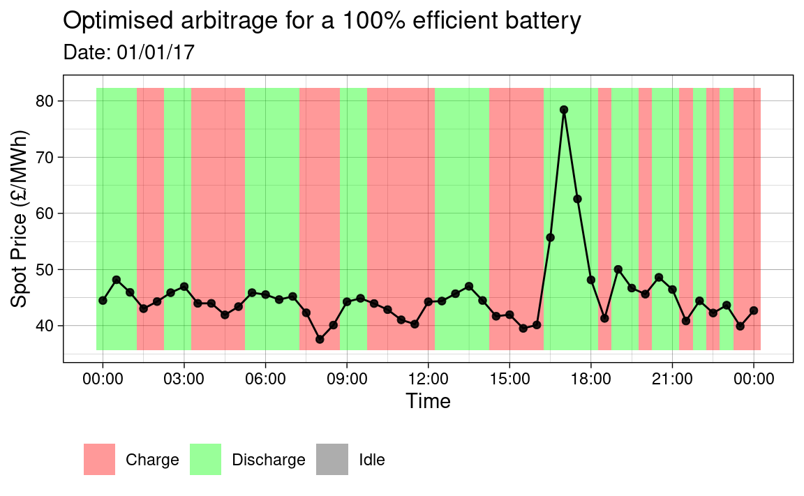

The rbattery package provides tools for the analysis of business strategies with Battery Energy Storage Solutions (BESS). Arbitrage means that when the spot price of electricity is low, the battery will be charged and when it is high, it will be discharged. The battery may also be idle if it is not profitable to operate the battery.
Electricity is traded by blocks of time, known as settlement periods, having a duration of 30 minutes. For a perfect battery, an income can be made for any pair of settlement periods where there is a spot price differential. However, real batteries are subject to efficiency losses when charging or discharging. Therefore, an arbitrage charge/discharge operation is not always profitable, even when there is a price differential.
Arbitrage optimisation is subject to constraints due to the physical capacity of the battery and external factors, such as requirements for participating in other markets, in conjunction with arbitrage. For a detailed description of the optimisation method, refer to the Optimisation Algorithm vignette. Often, arbitrage will supplement income from other electricity markets. However, the aim of the analysis in this document is to demonstrate a simple example of optimising battery operation for arbitrage only.
The rbattery package provides historical example data for the EPEX SPOT Intra-day Market from April 2016 - April 2017.
head(spot_price_2016) #> # A tibble: 6 x 4 #> timestamp N2EX EPEX SSP #> <dttm> <dbl> <dbl> <dbl> #> 1 2016-04-01 00:00:00 28.4 27.4 24.9 #> 2 2016-04-01 00:30:00 28.4 28.0 27.0 #> 3 2016-04-01 01:00:00 28.0 29.9 38.8 #> 4 2016-04-01 01:30:00 28.0 33.1 140 #> 5 2016-04-01 02:00:00 27.0 31.8 40.3 #> 6 2016-04-01 02:30:00 27.0 28.6 24.6
Consider optimising arbitrage for these spot prices for a 100% efficient battery and a 90% efficient battery. The optimise_arbitrage() function is used, as follows:
opt_100 <- spot_price_2016 %>% select(timestamp, EPEX) %>% optimise_arbitrage(price_from = "EPEX", capacity = 6, c_rate = 1/3, efficiency = 1) opt_90 <- spot_price_2016 %>% select(timestamp, EPEX) %>% optimise_arbitrage(price_from = "EPEX", capacity = 6, c_rate = 1/3, efficiency = .9) head(opt_100) #> timestamp EPEX charge_state discharge charge arb_income deg_cost #> 1 2016-04-01 00:00:00 27.42 0 0 1 -27.42 0 #> 2 2016-04-01 00:30:00 28.04 1 0 1 -28.04 0 #> 3 2016-04-01 01:00:00 29.93 2 0 0 0.00 0 #> 4 2016-04-01 01:30:00 33.10 2 1 0 33.10 0 #> 5 2016-04-01 02:00:00 31.84 1 1 0 31.84 0 #> 6 2016-04-01 02:30:00 28.57 0 0 0 0.00 0 head(opt_90) #> timestamp EPEX charge_state discharge charge arb_income deg_cost #> 1 2016-04-01 00:00:00 27.42 0 0 0 0 0 #> 2 2016-04-01 00:30:00 28.04 0 0 0 0 0 #> 3 2016-04-01 01:00:00 29.93 0 0 0 0 0 #> 4 2016-04-01 01:30:00 33.10 0 0 0 0 0 #> 5 2016-04-01 02:00:00 31.84 0 0 0 0 0 #> 6 2016-04-01 02:30:00 28.57 0 0 0 0 0
Notice that optimise_arbitrage takes a data.frame as the first argument and returns a data.frame. The returned data.frame includes the input combined with the battery operating results for the optimisation. The function was designed in this way in order to facilitate its use within a tidyverse style workflow i.e. the use of the pipe operator, %>%.
The income from the optimisations is available by summing the arb_income column from the results. For example:
result_fmt <- "Income from {efficiency}% battery: £{income}k" glue::glue(result_fmt, efficiency = 100, income = round(sum(opt_100$arb_income)/1000)) glue::glue(result_fmt, efficiency = 90, income = round(sum(opt_90$arb_income)/1000)) #> Income from 100% battery: £131k #> Income from 90% battery: £86k
The code below performs some manipulation on the results and then plots the optimal battery operation for each case on 01/01/2017.
# Libraries. library(ggplot2) library(lubridate) # Plot bewteen these times. start_time <- ymd_hms('2017-01-01 00:00:00') end_time <- ymd_hms('2017-01-02 00:00:00') my_plot <- function(opt, efficiency) { # Combine data, reshape and filter for plot. df_plt <- opt %>% mutate(idle = 1 - charge - discharge) %>% pivot_longer(c(discharge, charge, idle), names_to = 'op_mode', values_to = 't_prop') %>% filter(between(timestamp, start_time, end_time)) # Calculate operation mode overlay tiles on plot. range_epex <- range(df_plt$EPEX) * c(0.95, 1.05) df_plt <- df_plt %>% group_by(timestamp) %>% mutate(height = t_prop * (diff(range_epex)), y = min(range_epex) + (cumsum(height)) - height/2) %>% ungroup() # Plot operation mode. ggplot(df_plt, aes(x = timestamp)) + geom_tile(aes(y = y, height = height, fill = op_mode), alpha = .4) + geom_line(aes(x = timestamp, y = EPEX), inherit.aes = FALSE) + geom_point(aes(x = timestamp, y = EPEX), alpha = .5) + scale_x_datetime( date_labels = '%H:%M', breaks = seq(from = start_time, to = end_time, by = '3 hours')) + scale_fill_manual( values = c(discharge = 'green', idle = 'grey20', charge = 'red'), labels = c(discharge = 'Discharge', idle = 'Idle', charge = 'Charge')) + labs(x = "Time", y = "Spot Price (£/MWh)", title = glue::glue("Optimised arbitrage for a {efficiency}% \\ efficient battery"), subtitle = glue::glue("Date: ", strftime(start_time, '%D')), fill = '') + theme_linedraw() + theme(legend.position = 'bottom', legend.justification = c(0, 0), legend.direction = 'horizontal') } # Print plots my_plot(opt_100, 100) my_plot(opt_90, 90)

As expected, it is observed that when the efficiency is less than 1, that the profitability of the arbitrage market decreases.